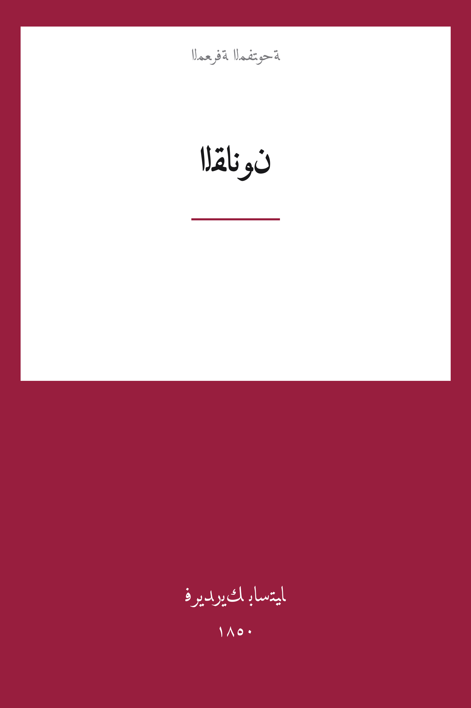

The Law (La Loi)
القانون
الاقتصاد والمجتمع
ملك عام
ترجمة كاملة
القانون — أكثر نصوص فريدريك باستيا شهرةً وأثرًا: بيانٌ حادٌّ في حرية الإنسان وحدود سلطة الدولة، وردٌّ صريح على الاشتراكية في مهدها. يُعرّف القانونَ بأنه تنظيمُ العدالة وحدها، ويحذّر من تحويله أداةً للاستغلال بحجة الخير العام. ترجمة كاملة عن الأصل الفرنسي مع الحواشي.
| المؤلف | فريدريك باستيا — Frédéric Bastiat |
| سنة النص الأصلي | ١٨٥٠ |
| كلمات المصدر (الإنجليزية) | ١٦٠٦٩ |
| كلمات الترجمة (العربية) | ١١٧٦٨ |
| مقاطع الترجمة المدققة | ٧ |
| مدة القراءة التقريبية | ≈ ٢٦٥ دقيقة |
الترخيص والحقوق: النص الأصلي الفرنسي (1850) في الملك العام. هذه الترجمة العربية منشورة بإذن حر. المصدر: fr.wikisource.org — الأعمال الكاملة لفريدريك باستيا